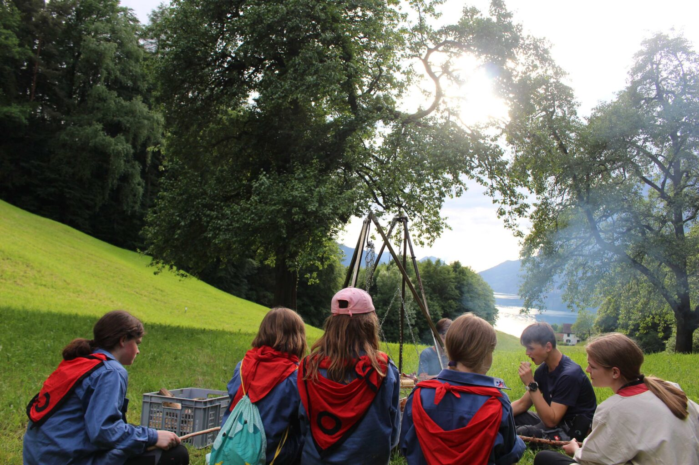

Was ist CEVI
Eine einfache Frage mit einer kurzen und einer langen Antwort :-).
Die kurze Antwort: CEVI ist der Schweizer Zusammenschluss von CVJM (Christlicher Verein Junger Männer) und CVJF (Christlicher Verein Junger Frauen) und ist als solcher der drittgrösste Jugendverband der Schweiz.
Die lange Antwort: beginnt im Jahr 1844…
Gründung YMCA
Im Juni 1844 gründete George Williams den YMCA (Young Men's Christian Association) in London. Ziel war das Ermöglichen von Freundschaften innerhalb der Herausforderung des Industrie-Arbeitalltages. Die Idee verbreitete sich schnell und bereits 1855 konnte in Paris der Weltbund gegründet werden. Davor wurde von niemand geringerem als dem Nobelpreisgewinner und Gründer des Roten Kreuzes Henry Dunant um 1852 die erste CEVI-Gruppe in Genf gegründet. Das weibliche Pendant zum YMCA – der YWCA (Young Women's Christian Association) – entstand wiederum einige Jahre später (1877), als sich Lady Kinnaird, die Leiterin von Frauenhäusern, und Emma Robarts, welche Frauen Weiterbildungen ermöglichte, zusammenschlossen. Der YMCA-Weltbund ist heute eine weltweite, christliche und ökumenische Freiwilligenbewegung, die sich für die zentralen Werte wie Gleichberechtigung, Liebe, Frieden und Ausbildung einsetzt.
CEVI Schweiz
Von den englischen YMCA-Gruppen wurde nicht nur die Idee der christlichen Gemeinschaft, sondern auch die Idee der englischen Pfadfinder-Bewegung in die Schweiz getragen. So entstanden die ersten Jungscharen. Heute hat der CEVI schweizweit über 15'000 Mitglieder. Seine Arbeit stellt das Befähigen von Menschen ins Zentrum aller Tätigkeiten, getreu dem Motto: Wir trauen Gott, den Menschen und uns selber Grosses zu.
Regionalverband
Der CEVI Schweiz ist in 7 Regionalverbände aufgeteilt. Der CEVI March gehört zum Regionalverband Zürich und ist der einzige CEVI im Kanton Schwyz. Die Regionalverbände organisieren verschiedenste Ausbildungskurse, in denen die jungen Menschen lernen Verantwortung zu übernehmen und auf ihre Leitungsfunktion der Jungscharnachmittage hin ausgebildet werden.
CEVI March
Der CEVI March wurde 2010 auf Initiative des damaligen Kirchgemeinderatsmitgliedes und ehemaligen Präsidenten des CEVI March als Teil der Kinder- und Jugendarbeit der evangelisch-reformierten Kirche March gegründet. Sein Einzugsgebiet umfasst die gesamte March: von Altendorf bis Reichenburg. Der CEVI March ist aufgeteilt in die Jungschar, welche die „eigentliche“ Freiwilligenarbeit (das Durchführen von Jungscharnachmittagen, Lagern etc.) ausführt, und den Verein CEVI March, der die Jungschararbeit finanziell und ideell trägt.

Komm doch einfach mal vorbei.
Schnuppern ist jederzeit und unverbindlich möglich – melde dich kurz bei der Stufenleitung, zieh Kleider an, die dreckig werden dürfen, und los gehts.
So gehts